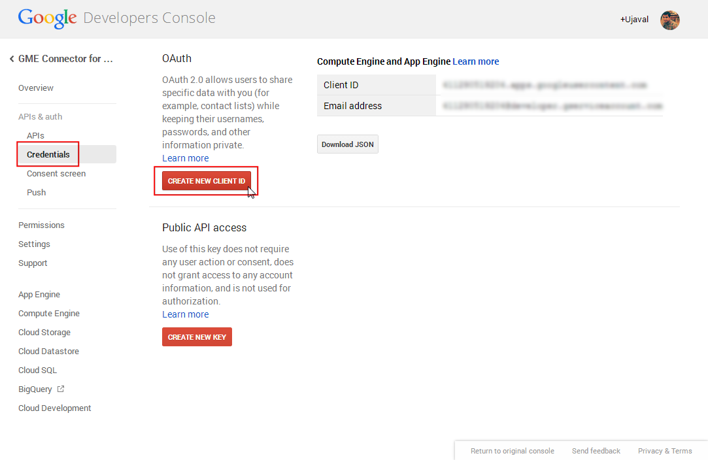

Campionare i dati di un raster usando punti o poligoni
[ Download PDF A4 Letter ]
Molti dataset di tipo scientifico e relativi all’ambiente si presentano in forma di griglie raster. Per esempio i dati riguardanti l’altezza del suolo (DEM) sono distribuiti in formato raster. In questi file raster, il parametro che viene rappresentato è codificato nel valore di ciascuno dei pixel del raster. Spesso, abbiamo bisogno di estrarre questi valori relativamente a un dato territorio oppure di aggregarli su un’area definita. Queste funzioni sono disponibili in due plugin di QGIS: il Point Sampling Tool e il Zonal Statistics plugin.
Descrizione dell’esercizio
Data una griglia raster contenente le temperature massime negli Stati Uniti, vogliamo ricavarne le temperature di tutte le aree urbane e quindi calcolare la temperatura media per ciascuna divisione amministrativa degli USA.
Altri aspetti che avremo modo di apprendere nel corso dell’esercizio.
Procedimento
Andate su selezionate il file appena scaricato us.tmax_nohads_ll_{YYYYMMDD}_float.tif e fate click su Apri.

Una volta che il layer raster è stato caricato, selezionate lo strumento informazioni elemento e fate click in un punto qulsiasi del layer. Vedrete immediatamente il valore della temperatura in gradi celsius indicato come valore di Banda 1 per quella località.

A questo punto, estraete sul vostro disco il contenuto del file archivio ``2013_Gaz_ua_national.zip``che avete appena scaricato. Quindi andate su .

Nella finestra di dialogo Crea un vettore da un file di testo delimitato. Individuate il file appena estratto 2013_Gaz_ua_national.txt e apritelo. Scegliete Tab dopo aver sbarrato Delimitatori personalizzati. I punti delle coordinate sono in Latitudine e Longitudine quindi selezionate le INTPTLONG come campo X e INTPTLAT come campo Y.

Ora sia pronti ad estrarre i valori delle temperature dal layer raster. Installare il plugin Point Sampling Tool. Vedete Usare i Plugins per i dettagli su come installare un plugin.

Aprite la finestra di dialogo da .

Nella finestra di dialogo Point Sampling Tool selezionate 2013_Gaz_ua_national come il Layer che contiene i punti campione. Dobbiamo scegliere esplicitamente quali sono i campi del layer di input che intendiamo portare nel layer di output. Scegliete i campi GEOID e NAME dal layer 2013_Gaz_ua_national. Possiamo campionare i valori di differenti bande raster simultaneamente, ma considerato il fatto che il nostro raster ha una sola banda, scegliete us.tmax_nohads_ll_{YYYYMMDD}_float: Band 1. Chiamate il vettore di output con il nome di max_temparature_at_urban_locations.shp. Fate click su OK per avviare il processo di campionamento. Fate click su Close quanto il processo sarà concluso.

Ora vedrete un nuovo layer max_temparature_at_urban_locations caricato in QGIS. Usate lo strumento Informazioni elemento per fare click in qualsiasi punto per vedere i relativi attributi. Vedrete the us.tmax_no field - che contiene i valori dei pixel raster nella posizione del punto. Vedrete il campo us.tmax_no, che contiene il valore del pixel raster comparire nella posizione del punto.

La prima parte della nostra analisi è fatta. Possiamo rimuovere i layer che non sono più necessari. Tenete premuto il pulsante Shift della tastiera e selezionate con il mouse il layer max_temparature_at_urban_locations e 2013_Gaz_ua_national 2013_Gaz_ua_national . Click con il tasto destro e selezionate Rimuovi per eliminarli dalla TOC di QGIS.

Andate su . Individuate il file scaricato tl_2013_us_county.zip e fate click su Open. Selezionate il file tl_2013_us_county.shp come layer e fate click su OK.

Il layer tl_2013_us_county` verrà aggiunto a QGIS. Questo layer ci giunge in una proiezione ``EPSG:4269 NAD83 che non si integra con la proiezione del raster. Pertanto ri-proietteremo questo layer in una proiezione EPSG:4326 WGS84.

Click con il tasto destro del mouse sul layer tl_2013_us_county e selezionate Salva con nome...

Nella finestra di dialogo Salva i vettori come ... fate click su Sfoglia e chiamate il file di output counties.shp. Scegliete SR selezionato nell’apposito menu a discesa che si trova alla voce Sist rif. Fate click su Sfoglia e selezionate WGS 84 come SR. Spuntate la casella :Aggiungi il file salvato alla mappa e fate click su OK.

- A new layer named counties will be add to QGIS.

Attivate il plugin che si chiama Plugin di statistica zonale. Questo è un plugin interno, per cui è già installato. Vedete Usare i Plugins come attivare un plugin interno.

Andate su .

Selezionate il file us.tmax_nohads_ll_{YYYYMMDD}_float come Raster counties``alla voce :guilabel:`Vettore di poligoni che contiene le zone`. Digitate ZS_ come "prefisso colonna di output". Digitate ``ZS_ come Prefisso colonna di output. Click su OK.

L’analisi prenderà un quantitativo di tempo variabile che dipende principalmente dalle dimensioni del dataset.

Una volta che il processo è finito selezionate il layer counties. Usate lo strumento Informazioni elemento e fate click sui poligoni delle divisioni amministrative. Vedrete tre nuovi attributi aggiungersi al layer: ZS_count, ZS_mean and ZS_sum. Questi attributi contengono, nell’ordine, il conteggio dei pixel del raster, la media dei pixel del raster e la somma dei valori dei pixel del raster. Considerando che abbiamo detto di essere interessati alla temperatura media, il campo ZS_mean sarà quello che fa al caso nostro.

Andiamo a tematizzare questo layer e creiamo una carta delle temperature. Click sul tasto destro del layer ``counties` e selezionate Proprietà.

Passate sulla scheda Stile. Scegliete Graduato e selezionate come Column` il campo ZS_mean . Scegliete una Scala di colori`e un :guilabel:`Modeo a vostra libera scelta. Fate click su :guilabel:`Classifica per creare delle classi di valori. Fate click su OK.
(Andate a vedere Raster, elementi base: tematizzazione ed analisi per maggiori dettagli sulle tematizzazioni.)

Vedrete i poligoni delle divisioni amministrative tematizzati sulla base delle temperature medie ricavate dalla griglia raster.